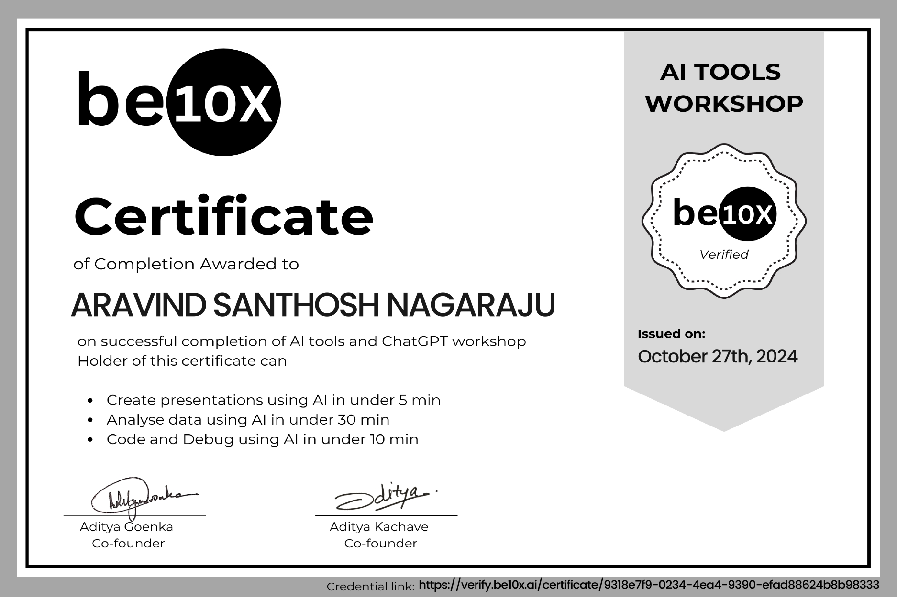

About me
I’m a Python Developer and Data Analyst with an MSc in Computer Science, experienced in building web applications and automating workflows. I enjoy turning data and ideas into efficient, user-friendly software solutions that improve business performance.
I work on creating smart tech solutions using Python and IoT. During my journey, I’ve improved warehouse operations and data tracking at Amazon and John Lewis & Partners, making processes more efficient and organized. My goal is to combine technology and data to make everyday operations smoother and smarter.
What i'm doing
-

Web development
High-quality development of sites at the professional level.
-

Data Science
Professional development of data-driven solutions and analytical models.


 Data Analysis.png)


![ Certified AI Tools Workshop Be10x As part of my AI Tools Productivity Workshop certification, I gained hands-on experience using a variety of modern AI tools to automate tasks, generate content, and improve workflow efficiency. I worked with platforms like Gamma for AI-generated presentations, Canva for visual design, Merlin and Gemini for research support, AskCodi for code generation, AnySummary for analyzing research papers, and Yoodli for communication practice. These tools helped me complete tasks such as summarizing articles, drafting emails or blogs, creating slide decks, and generating code snippets much faster and with better accuracy. The workshop strengthened my ability to leverage AI for documentation, idea generation, reporting, and productivity enhancement, helping me work more efficiently under deadlines and improving overall output quality.](./assets/images/Certifications/Be10x_Certificate.jpg){kind=link}